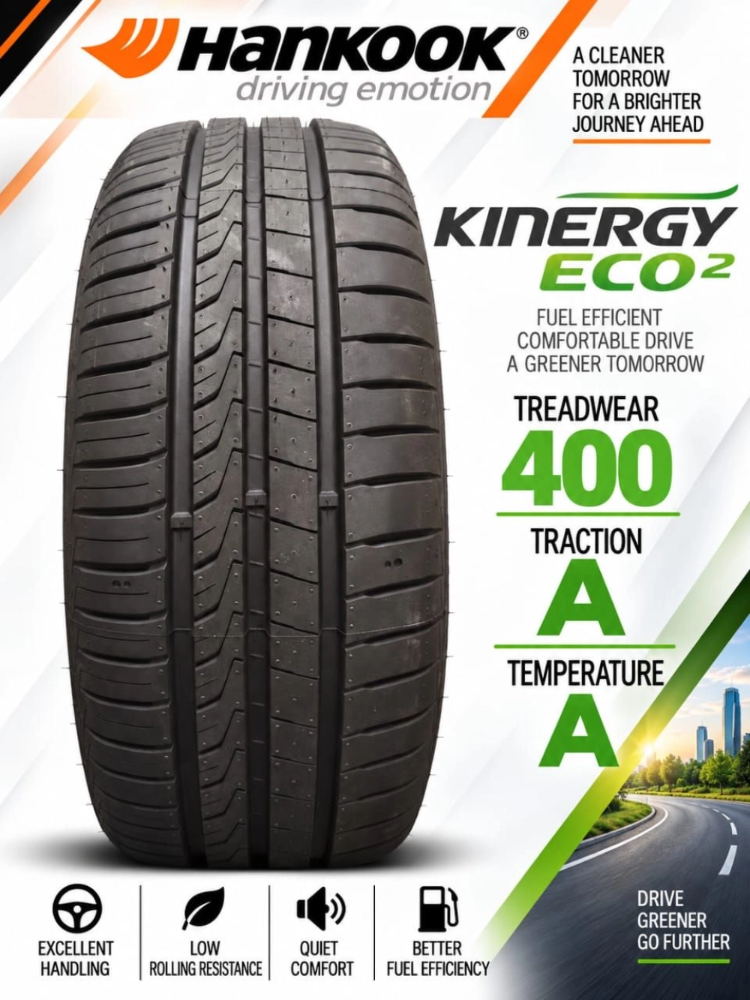

Hankook ECO2 K435 195/55R15

RM 180.00
The Hankook Kinergy Eco2 K435 is an eco-friendly passenger car tyre designed for excellent handling, quiet comfort and improved fuel efficiency. Its optimised tread design provides reliable wet and dry grip, while low rolling resistance helps reduce fuel consumption. Ideal for comfortable daily driving and highway cruising. Key Features: • Excellent handling and stability • Low rolling resistance • Quiet and comfortable ride • Better fuel efficiency • Reliable wet and dry performance UTQG Rating: • Treadwear: 400 • Traction: A • Temperature: A
Klang Hock Li Tyre Services Sdn Bhd, Klang, Selangor, Malaysia.
View live product details and enquire